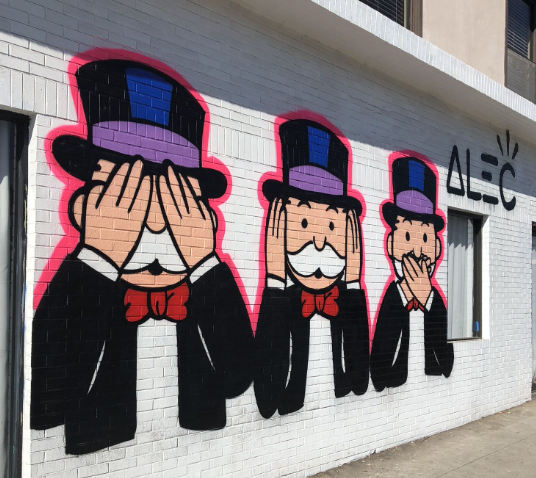

Hello. I am a designer who loves to do research. I strive to create thoughtful, user centric, and impactful user experiences. I was once a Quality Assurance Analyst for thirteen years, so I know a lot about software testing, how a user thinks, have a creative mindset with the ability to approach a problem creatively. I am easy to work with and have excellent analytical skills. Building upon these skills have helped me become a better User Experience Designer. I look forward to seeing, hearing and talking to you about your project.